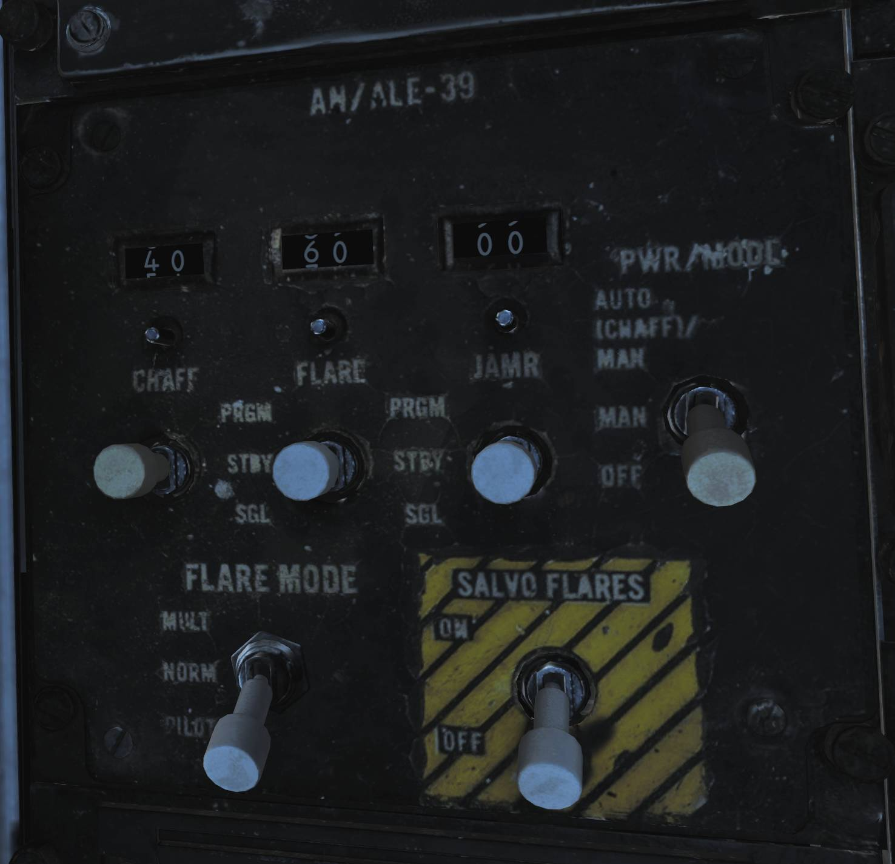

AN/ALE-39 Countermeasures Dispensing Set
The AN/ALE-39 is the countermeasures dispensing set installed in the F-14 in this simulation. It controls its own set of launchers located between the engine nozzles on the underside of the so called beaver-tail.
The launchers each have two sections, one containing 10 cartridges and the other 20. They are referred to the left and right dispensers even though the left is really the front one and the right the back one with both being mounted in line on the left side of the tail-hook. This is a remnant from the earliest model F-14s carrying the AN/ALE-29.
This all sums up to a capacity of 60 cartridges in the system with each section necessarily holding one type of cartridge meaning that any combination of cartridges is possible as long as each type’s quantity is a multiple of 10. The system itself has no real knowledge of what is loaded where so incorrectly programming the system can lead to the wrong type of cartridge being ejected.
The system itself can be operated manually from the control panel in the RIO pit or the DLC thumbwheel on the pilot stick when the flaps lever is in the up position. It is also capable of running programmed sequences of ejection which in turn can be initiated manually by the RIO from the control panel or the direction hats mounted on the hand hold over the DDD. In addition the AN/ALR-67 can also initiate the chaff ejection program if set up correctly on the AN/ALE-39 control panel.
Controls and Operation
💡 In DCS the F-14 countermeasure loadout is set in the Mission Editor, see DCS Mission Editor Functions Specific to the HB DCS F-14 or controlled through the radio menu under ground crew. The default setting in the mission editor is bypassed. To see the real loadout check the kneeboard.
Programmer

The programmer is used to set up what countermeasure cartridges are loaded where and to set up the different ejection programmes. The panel is located on the right horizontal console of the RIO cockpit.
The left side of the programmer holds the controls (thumbwheels) for the different ejection programmes, one section for each type of cartridge.
The CHAFF section controls how to eject chaff in program mode. The chaff sequences are programmed to launch a number of salvoes, each consisting of a burst of a set amount of cartridges.
- B QTY controls how many cartridges to eject in each burst, selection of 1-4 cartridges and C for continuous and R for random (4-6 cartridges) possible.
- B INTV sets the time in seconds between each individual cartridge ejection in each burst, possible settings being .1 (0.125), .2 (0.25), .5 (0.5), .7 (0.75), 1 and R for random.
- S QTY controls how many salvoes of bursts to eject in each program, settings available are 1, 2, 4, 6, 8, 10 and 15.
- S INT sets the time in seconds between each salvo in the program, available settings are 2, 4, 6, 8 and 10.
When using the random and continuous settings for B special conditions apply.
- B at C QTY and R INTV sets the first 3 cartridges to launch at 0.125 second intervals, the rest at random intervals from 0.25 to 4 seconds. Ejection disregards the S settings and continue until all cartridges are ejected.
- B at R QTY and R INTV sets each burst to have between 4-6 cartridges and to eject at random intervals between 0.25 to 4 seconds. The first burst in a salvo will always launch the first 3 cartridges at 0.125 second intervals.
- B at R QTY and INTV at set number sets each burst to launch between 4-6 cartridges at set interval. First burst will always launch first 3 cartridges at 0.125 sec interval.
- B at fixed QTY and R INTV sets each burst to eject one cartridge disregarding B QTY.
The JAMMER section controls the ejection of jammer cartridges in programmed mode.
- QTY sets how many jammer cartridges to eject, possible settings are 1-4.
- INTV uses all three indicated thumbwheels to set time in seconds between each ejection in the program. Settings from 1 to 299 possible in 1 second increments.
💡 Jammer cartridges not currently implemented in DCS.
The FLARE section controls ejection of flares when using programmed mode.
- QTY sets amount of flare cartridges to eject, possible settings being 2, 3, 4, 6, 8 and 10.
- INTV sets time interval between each ejection in seconds, possible settings being 2, 4, 6, 8 and 10.
The right side of the programmer sets the type of cartridge loaded into each section and the reset switch used after loading new cartridges.
The L10, L20, R10 and R20 thumbwheels can be set to C, J or F setting what cartridge is loaded into which section.
💡 Incorrectly setting type of cartridge loaded can result in the launch of the wrong type of cartridge.
The RESET switch needs to be used to reset the system's internal counters after loading new cartridges into the launchers. Needs to be held to reset for at least 5 seconds to reset the system.
Control Panel

The control panel is used to control system power, to set up automatic ejections and to manually eject cartridges and is also located on the RIO right horizontal console.
The mechanical counters on the upper part of the panel are used to indicate remaining cartridges of each type. They need to be set up manually using the knob below each counter but decreases automatically as each cartridge ejection pulse is sent. As they’re set manually it’s possible to end up in a situation were the counter is at 0 but additional cartridges are still available. In this cases ejection pulses will still be sent but the counter will remain at 0.
Below each counter each cartridge type has a switch for manual ejection commands. The switches are momentary and spring-loaded to center, each having three positions. PRGM initiates respective set ejection program, SGL commands ejection of a single cartridge of respective type and STBY is the default center position not commanding manual ejection.
The PWR/MODE switch enables power to the AN/ALE-39 and can enable automatic chaff launch via the AN/ALR-67 RWR. AUTO (CHAFF) / MAN enables power to the system and allows the AN/ALR-67 to initiate the set chaff ejection program but flares remain in manual. Chaff ejection is initiated when the RWR detects a threat actively engaging own aircraft, after each program initiation a 30 second cool-down is present before next program is initiated if such a detection is still present. Manual ejection is still available as normal. MAN enables power to the system and allows for manual initiation of all functions. OFF disables the system.
The FLARE MODE switch controls how flares are ejected and also sets up how the pilot stick DLC button is used. The flaps lever needs to be in the up position to enable DLC button cartridge ejection. The switch has three positions. MULT, multiple, sets the system to eject one cartridge from each section set to flares on the programmer for each ejection pulse.
💡 That this means that if flares are loaded on all four sections this results in 4 flares being launched each time a flare ejection command is sent.
NORM sets normal flare ejection pulse behavior. PILOT enables ejection of one flare cartridge with each depression of the DLC button. Normal flare ejection still possible. If the switch is set a position other than PILOT the DLC button will command ejection of a single chaff cartridge.
Finally the SALVO FLARES switch initiates rapid ejection of all flares using a 0.125 second time interval. Normally spring-loaded to the OFF position. Can’t be stopped once initiated.
🔴 WARNING: All countermeasure cartridge ejection is inhibited while the weight on wheels sensor is active, preventing countermeasure ejection while on the ground.
RIO Hand Hold Switches

Two four-way direction hats are mounted on the RIO hand hold above the DDD to enable quick access to countermeasure ejection. The two switches are mirrored and UP commands ejection of a single chaff cartridge. DOWN initiates the chaff ejection program, INBOARD (towards center) initiates the jammer ejection program and OUTBOARD (towards the sides) initiates the flare ejection program.